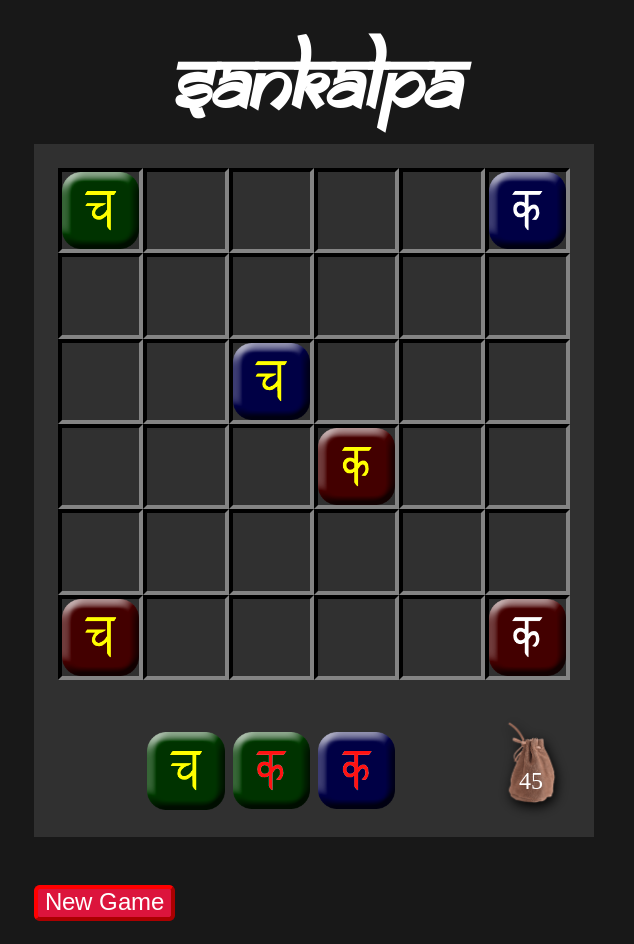
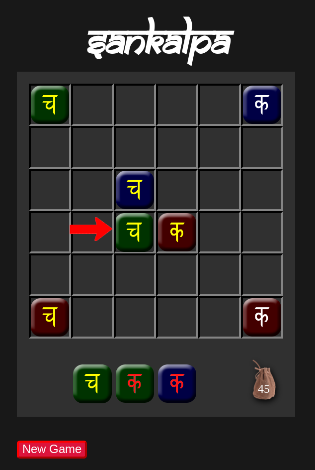
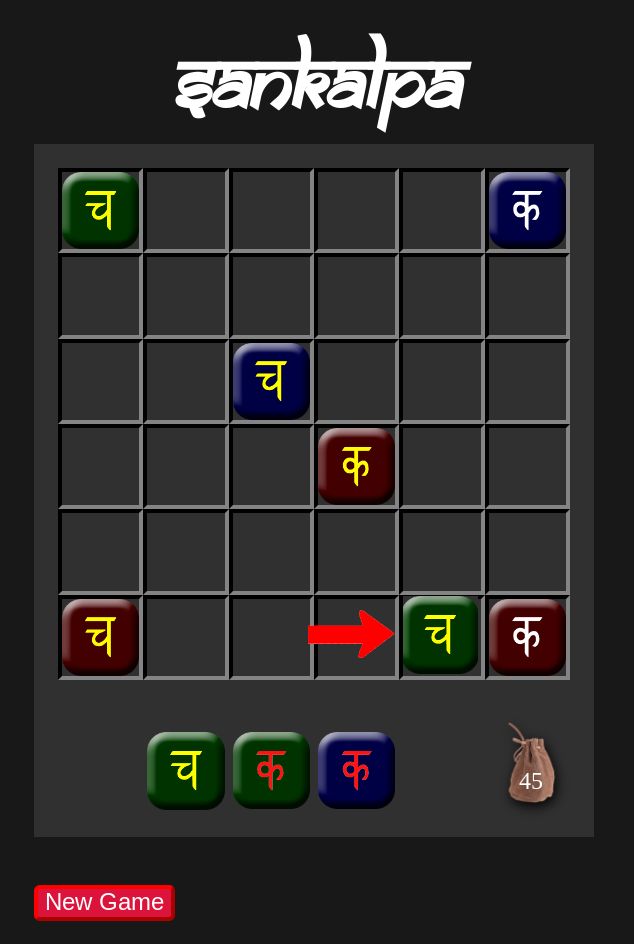

Sankalpa is a game of matching colors of tiles. Each of the 27 unqiue tiles is one of 3 colors,
has one of 3 symbols on it, and those symbols are one of 3 colors. There are two of each unqiue
tile for a total of 54 tiles. Of these, 36 will be used in each game, selected at random.
The game board is 6x6 and starts with a tile in each corner, and two in the middle, which are
placed automatically at the start of each game:

Start Board
Below the board you have a hand of 3 tiles. Each turn, you will select one of these tiles to
play onto the board by clicking/tapping on it and then placing it next to (diagonally doesn't
count) a tile already on the board by clicking/tapping on the square.
At least one of the colors or symbols of the tile you are playing must match all tiles next to
the place you play it. For example, if you were to play your leftmost tile like this:

A Play
You would match the symbol of your played tile with the symbol of the tile above it, as well as
the color of the symbols. You would also match the color of the symbol to the right, for a total
of 3 matches. Starting with 1 match, you get 1 point and this doubles for every match after 1,
so for matching 3 you would get 4 points.
Note that you could not play this same tile here:

Invalid Play
This is because the symbols don't match, the colors of the symbols don't match, and the tiles are
not the same color. Remember that on every play you must match at least one of these things on
all tiles you touch. Since there are two of each unique tile, the most matches you could get is
9 (3 + 2 + 2 + 2) for 256 points! Additionally, if you can cover the entire board then you get
50 bonus points. The game ends when you either cover the board or don't have any more legal plays
that you can make.
After placing a tile a new tile will be drawn from the bag shown, and the number on the bag shows
how many tiles are left. The objective of the game is to score the most points you can - good luck!